老師，做好了，請看（C10）
📅 練習報告（打勾清單 每一次 換一種 排法、下面 〔❤ 原本的 愛心〕＋10 種 新愛心）：學生 做完 題目、遊戲 的 成績畫面；老師看板 點一個人 ➜〔📋 細節〕
🦸 我的英雄（選 英雄、武器、寵物、寶物、經驗值、金幣、商店、圖鑑）
⚡ 現場任務 大螢幕（老師）／ 學生／ 大字版 Firebase 設定頁
📅 老師看板〔📅 一鍵設定〕、〔🔒 開關〕可以 設定 開放時間、〔🏆 學生排行榜 開／關〕拿掉了
💼 職業單字網站 36 張 字卡 也 記 成績（看字卡、聽完字卡、老師 派任務）
一、5 句 語音（a 唸 清楚 一點）
新的 做法：a 前面 停 一下下，a 唸 清楚 的 ㄜ。電腦 聽寫：新的 5 句 全部 聽對（現在的 5 句 都 聽錯）。
| 句子 | 現在 | 新的 |
|---|---|---|
| Is your dad a teacher? | 電腦 聽到：Is your dad a teacher? | |
| Is your dad a student? | 電腦 聽到：Is your dad a student? | |
| Is my grandpa a cook? | 電腦 聽到：Is my grandpa a cook? | |
| Is my grandpa a student? | 電腦 聽到：Is my grandpa a student? | |
| Is your grandpa a cook? | 電腦 聽到：Is your grandpa a cook? |
二、英雄、武器、寵物 的 稀有度
愈 稀有 愈 貴、看起來 愈 強（★ 星星、光芒、登場特效、⚔ 戰力）；不加 分數。現在 照 號碼 排（★ 普通 8 個、★★ 稀有 8 個、★★★ 史詩 7 個、★★★★ 傳說 4 個、★★★★★ 神話 3 個）。寵物 1～15（可愛）放 ★、★★；16～30（很酷）放 ★★★ 以上。
🦸 英雄（男、女 一樣：01～08 ★、09～16 ★★、17～23 ★★★、24～27 ★★★★、28～30 ★★★★★）
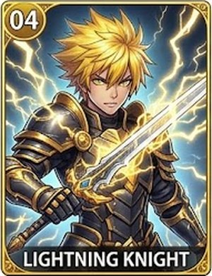
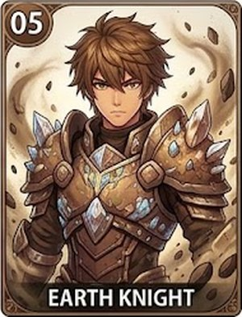
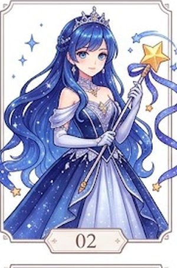
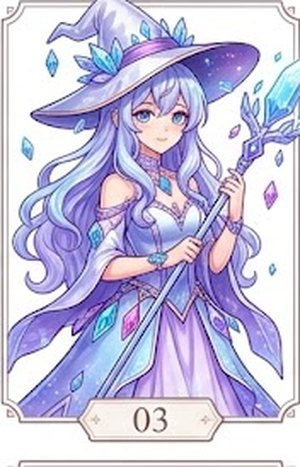
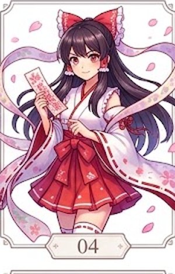
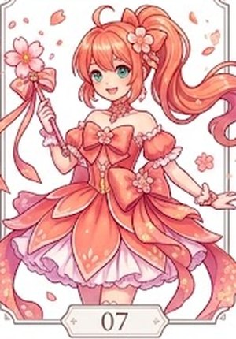
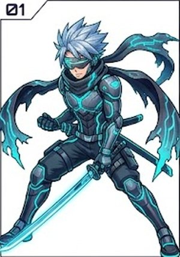
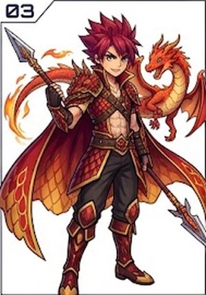
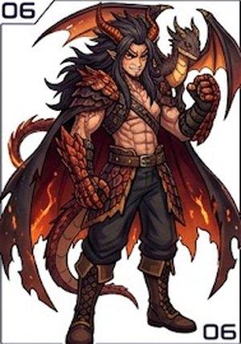
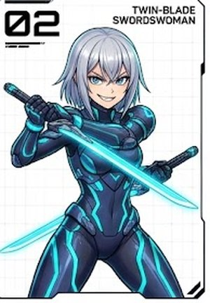
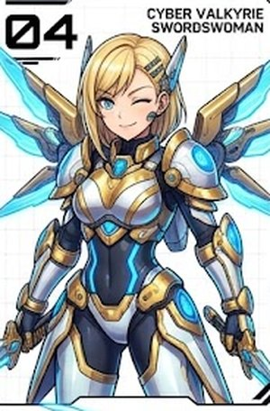
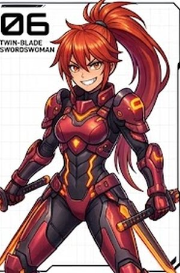
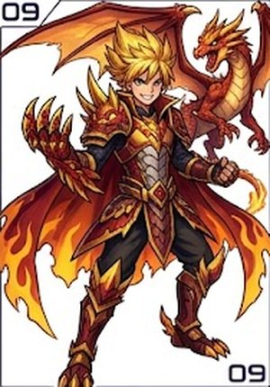
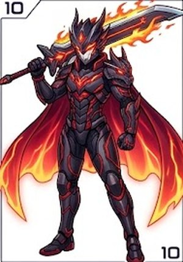
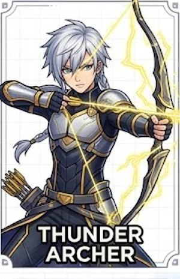
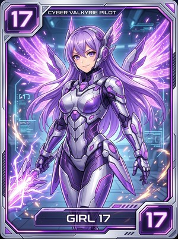
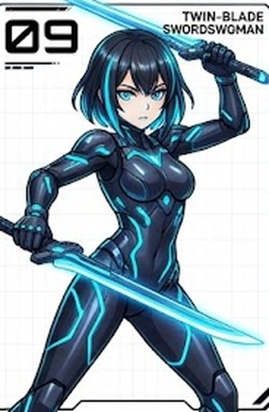
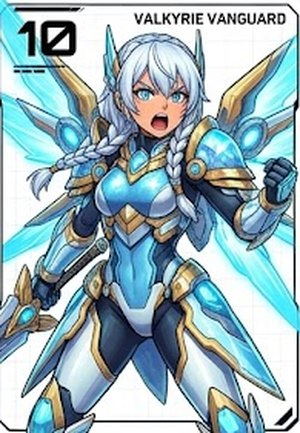
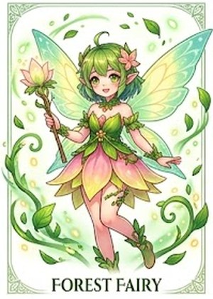
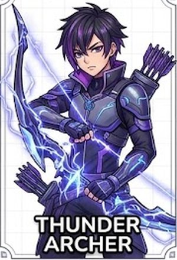
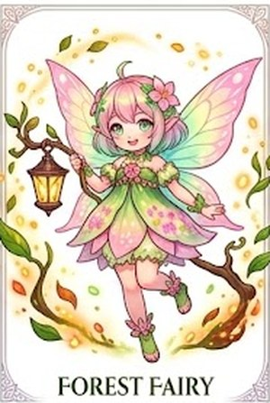
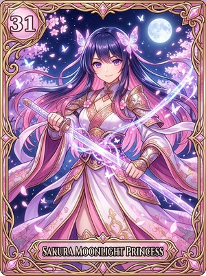
⚔ 武器
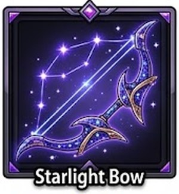
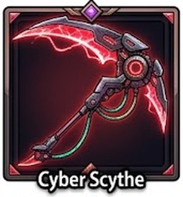
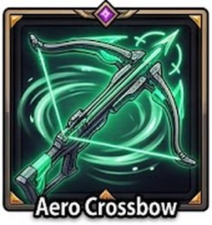
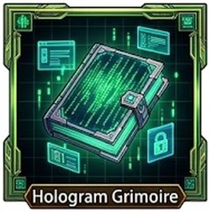
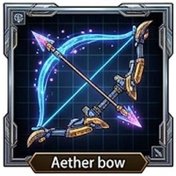
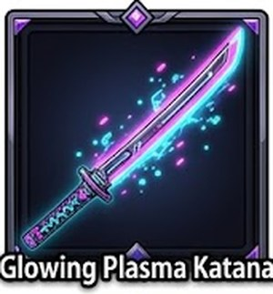
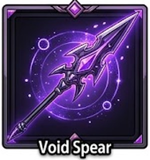
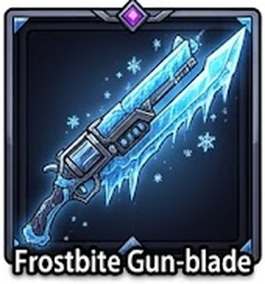
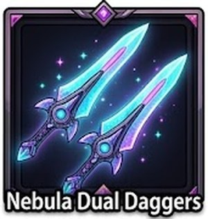
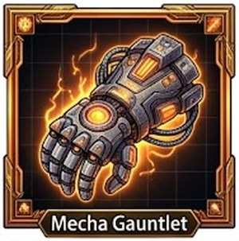
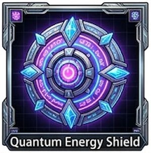
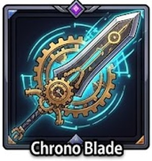
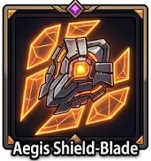
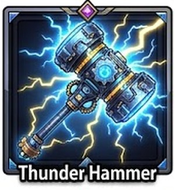
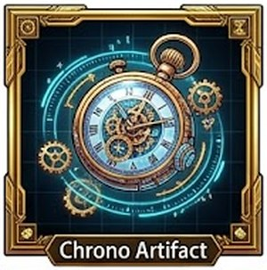
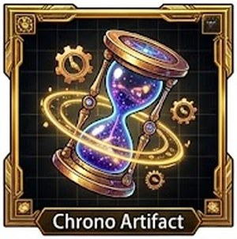
🐾 寵物
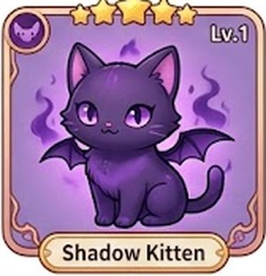
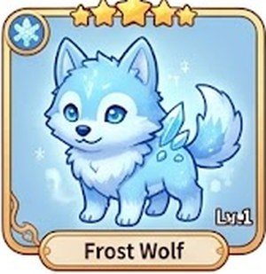
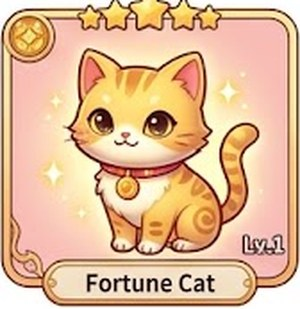
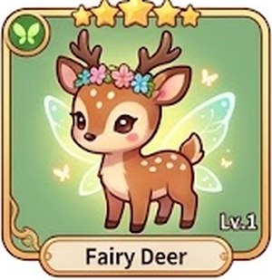
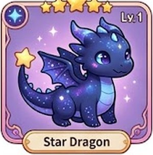
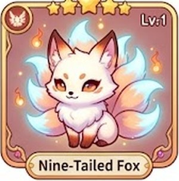
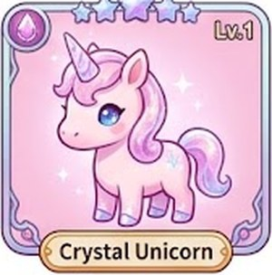
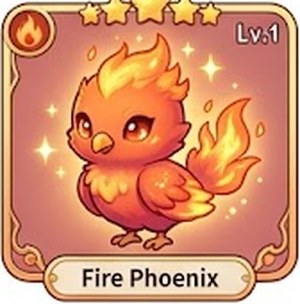
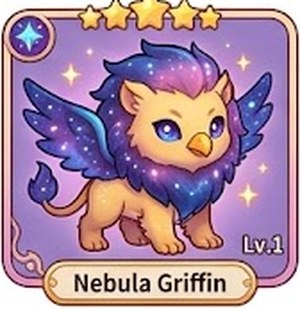
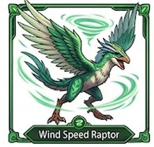
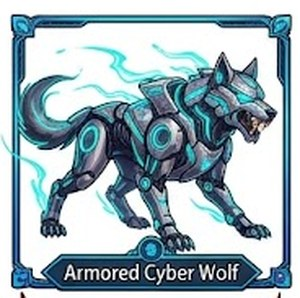
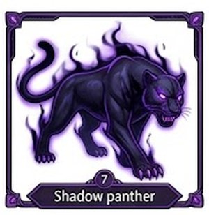

三、⚡ 現場任務 的 成績
現在：現場任務 結束，老師 按〔🎁 發獎勵〕➜ 每一個人 ⭐ 經驗值 ＋10、答對 1 題 🪙 ＋1、再 加上 抽到的 獎勵（只 進 〔🦸 我的英雄〕）。老師看板 的 練習次數、練了幾天 不算。
四、女 29 的 新圖
老師 上傳的「新的 女 29」跟 女 17（Cyber Valkyrie Pilot）是 同一張（電腦 一個點 一個點 比，完全 一樣），所以 女 29 先 不放（學生 選不到）。女 25 已經 換成 新圖 ✅。